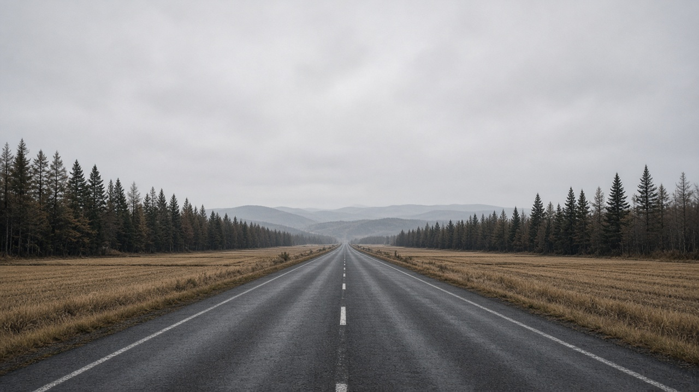
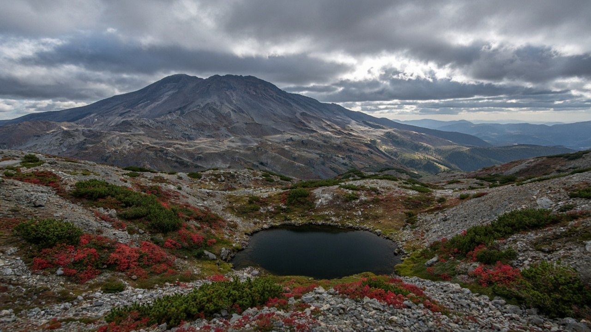
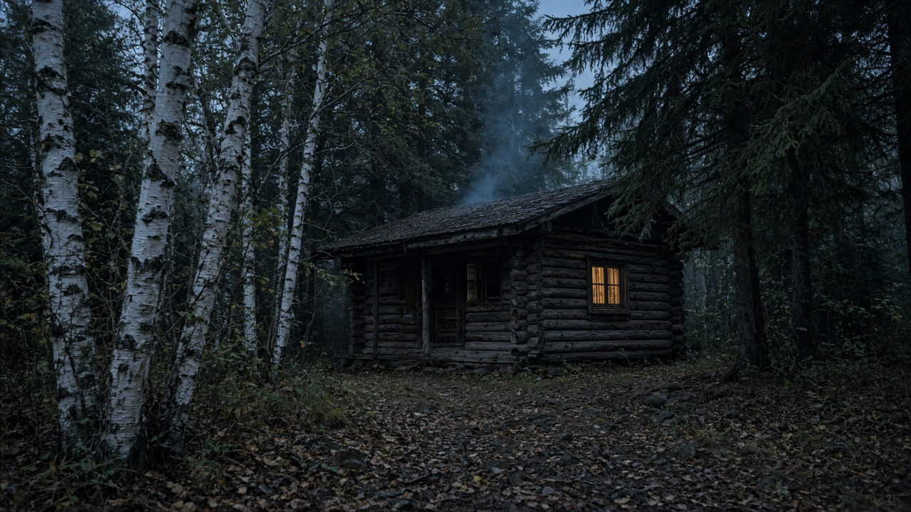

往路は12号で行く
三笠、奈井江、たきかわ、ふかがわと印が道沿いに並び、走行はおよそ二時間半。15時のログハウスに余白が残ります。
森林公園駅のあたりから、12号で道の駅の印を拾いながら当麻へ。二日目は旭山動物園、三日目は旭岳を先に置き、時間が許せばカムイの杜公園を見て帰る、車の二泊三日です。日付が決まっていないので、時刻は目安です。



三笠、奈井江、たきかわ、ふかがわと印が道沿いに並び、走行はおよそ二時間半。15時のログハウスに余白が残ります。
札幌から富良野だけで約二時間、そこから当麻まで足すと四時間超。景色はよいので、別の旅に置きます。
とうまのログハウスは水道とコンセントだけです。寝具・食器・調理器具は持参（マットと毛布は各300円で借りられる案内あり）。ひがしかぐら森林公園のミニキャビンはフローレ側で、22時から翌8時半までゲート閉鎖、キャビンの受付は13時から17時、チェックアウトは10時です。始発のロープウェイに乗るなら、早朝の出庫を受付へ確かめてください。確かめられない日は、8時半の開門に合わせて山へ向かいます。三笠は月曜休館でスタンプも押せません。両キャンプ場とも秋の終わりで閉場するため、出発前に営業日を見てください。
印は滞在を短く
各駅は20〜30分、昼食はふかがわにまとめると15時に間に合います。奈井江は24時間押印なので、月曜に三笠が閉まっていても印は拾えます。
二日目の動物園
当麻から車で20分弱。5月から10月中旬は9時半開園が目安です。東神楽のチェックインは13時以降なので、園内を長めに取ってからキャビンへ入ります。
旭岳は天候と混雑
ロープウェイは強風や雷で止まります。紅葉の土日は駐車場待ちが出やすいので、ゲートが開いたらすぐ山へ。姿見の池は一周およそ1時間、登山靴か厚底が安心です。
カムイの杜は余裕があれば
表記は「杜」の公園です。旭川市神居町にあり、12号で帰る途中に置けます。時間を食うなら道草館の印だけ押して帰宅しても、この旅の主旨は壊れません。
地図の道路はOSRMの走行ルート、背景は国土地理院の淡色地図です。時刻は日付未指定のため目安です。出発日が決まったら、キャンプ場の営業日、動物園の開園、ロープウェイの始発を公式で確かめてください。ユーザー表記の「カムイの社公園」は、旭川市のカムイの杜公園として組んでいます。